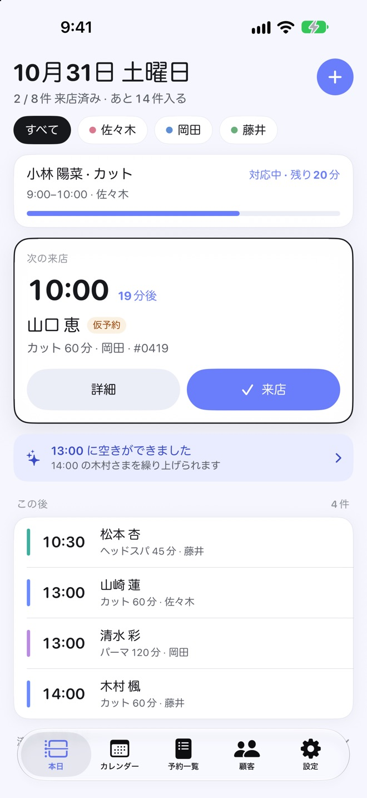
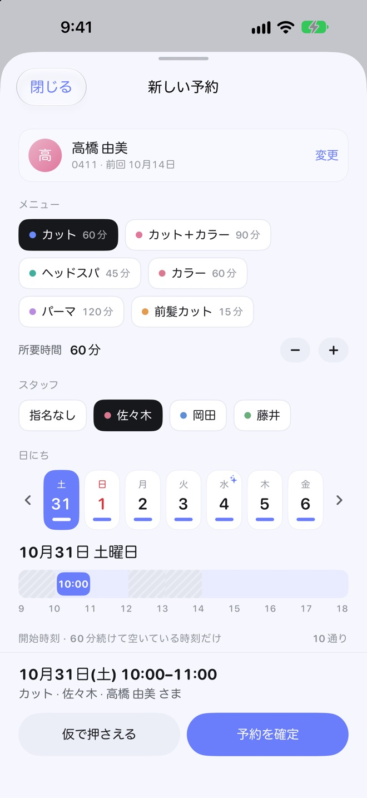
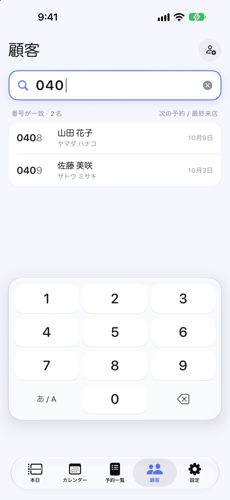
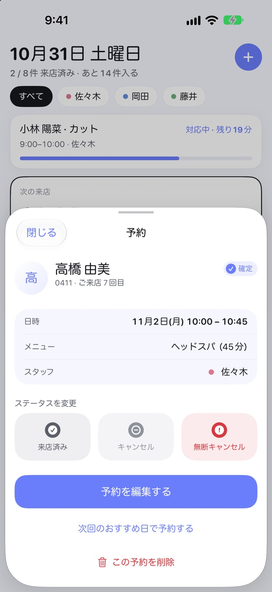
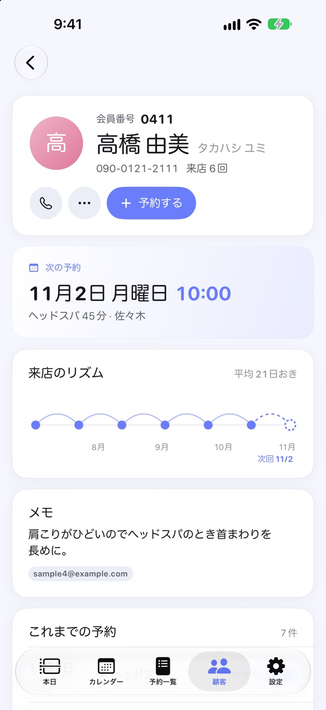
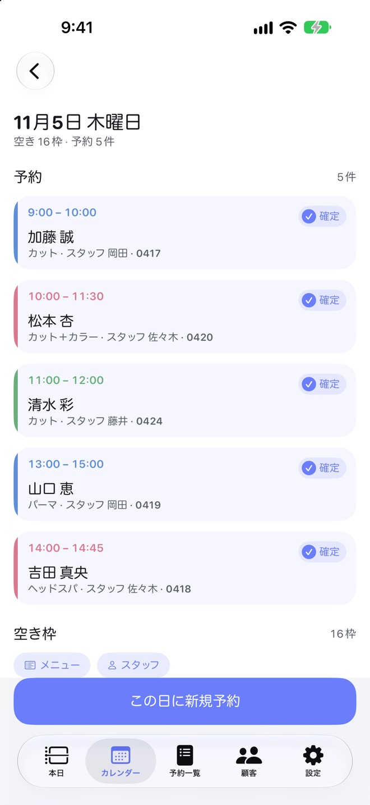
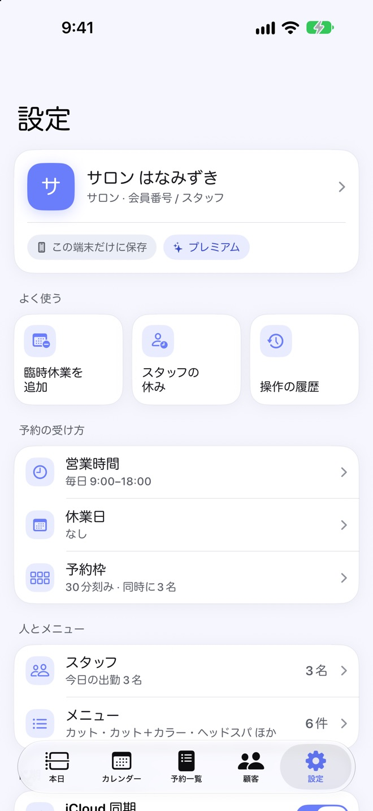
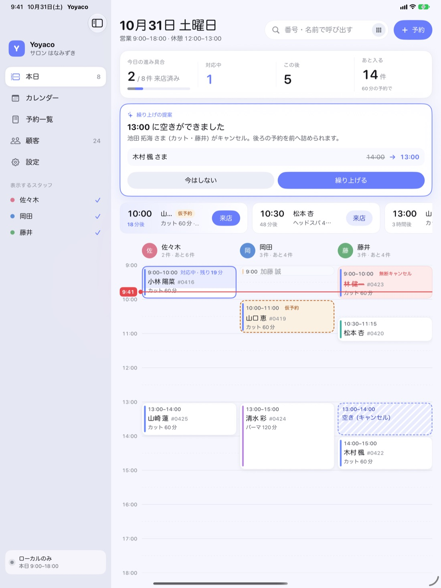

今日の受付は、
この1画面で
「本日」を開くと、対応中の予約・次の来店・この後の予約が並びます。お客さまが来たら「来店」を押すだけで、進み具合と、あと何件入るかが更新されます。
- 来店の時刻を過ぎても来ていない人は、遅れとして残ります
- キャンセルで空いた枠に、後ろの予約を前へ詰められることをお知らせしますプレミアム
お客さまを待たせながら、紙の台帳やカレンダーをめくって空いている時間を探す。Yoyaco（よやこ）は、1人から数人で営むサロン・クリニック・お店の受付のための予約管理アプリです。今日の流れと空き枠がひと目でわかり、予約も呼び出しも数タップで終わります。
App Store で近日公開iPhone・iPad／アカウントの登録は不要です

メニューの長さ・担当・休憩まで見て、入れられる時刻だけを出します。
会員番号を1桁打つごとに、お客さまの候補が絞れます。
会員登録も通信も要りません。広告や解析の仕組みも入っていません。
予約を入れる、呼び出す、来店を記録する。受付で毎日くり返すことを、迷わず数タップで終わるように作りました。
「本日」を開くと、対応中の予約・次の来店・この後の予約が並びます。お客さまが来たら「来店」を押すだけで、進み具合と、あと何件入るかが更新されます。
お客さま・メニュー・担当を選ぶと、その長さで続けて空いている開始時刻だけが出ます。担当の休みと入れる時間、休憩、予約の前後の準備と片付け、同時に受けられる人数まで見て計算するので、ダブルブッキングを防げます。

「顧客」を開くと数字キーから始まります。会員番号を1桁打つごとに候補が絞れ、名前・カナ・電話番号でも探せます。次の人の番号も、すぐに打ち始められます。

予約の詳細では、次に選ぶことの多い「来店済み」「キャンセル」「無断キャンセル」を大きなボタンにしました。間違えても、画面の下の「元に戻す」ですぐ戻せます。

実際に来店した回の間隔から、次に来そうな日と、その日の空き枠を提案します。電話の折り返しや、お会計のときの次回予約にそのまま使えます。

カレンダーの月の表で、予約の入っている日と担当の色、日ごとの残り枠がすぐわかります。日を選ぶと、その日の予約と空き枠が並びます。

営業時間や休みだけでなく、お店ごとの細かい決まりも入れられます。入れた決まりは、そのまま空き枠の計算に使われます。

大きな画面では、担当ごとの予約を時間の流れに沿って並べます。いまの時刻の線と、次に来るお客さまがひと目でわかります。

Siri・ショートカット・Spotlight から、今日の予約を確かめたり、予約を探したりできます。iOS 27 では、声で頼んだ予約も空きと重なりを確かめ、内容を読み上げてから保存します。
業種（サロン・クリニック・一般店舗）ごとのサンプルデータを入れて、使い方を試せます。サンプルだけを、あとから消せます。
同じ Apple アカウントでサインインした iPhone・iPad の間で、予約・お客さま・設定を同期します。
予約やお客さまの情報は端末の中に保存され、開発者のサーバーには送られません。会員登録も要らず、通信がなくても使えます。同期を使うときも、保存先は店主ご自身の iCloud です。広告や解析の仕組みも入っていません（プライバシーポリシー）。
紙の台帳は、開けばすぐ書けて、誰にでも分かる。でも、空いている時間を探すにはページをめくり、メニューの長さや担当の休みを頭の中で足し引きしなければなりません。前に来たのはいつだったかを探すのも、ひと苦労です。
Yoyaco は、受付で台帳がしていたことを、そのまま速くすることを目指しました。空いている時刻はアプリが数え、お客さまは番号で呼び出せます。美容室やネイル、整体や治療院、個人のクリニックまで、予約で動く小さなお店で、業種を問わずお使いいただけます。
予約の管理に必要な機能は、無料でお使いいただけます。登録の上限を外したいとき、提案や同期を使いたいときは、プレミアム（一度の購入。月額ではありません）をどうぞ。
すべての基本機能
一度の購入
料金はアプリの購入画面でご確認ください。購入は同じ Apple アカウントの端末で復元できます。
営業時間とメニューを入れるだけで、空き枠の計算が始まります。
App Store で近日公開